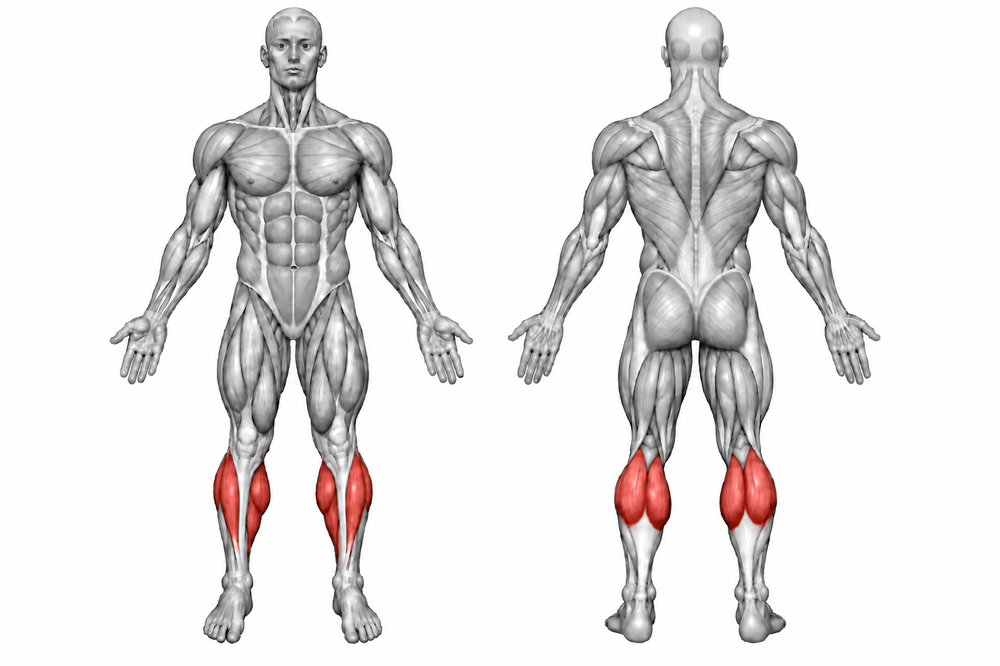

Calf Raise


How to Perform
Stand with your feet about hip-width apart and position yourself securely on the calf raise machine or platform. Keep your knees slightly bent and your core stable.
Raise your heels as high as possible by pressing through the balls of your feet. Pause at the top, then lower your heels under control to achieve a full stretch.
Primary Muscles
Gastrocnemius (Calves)
Secondary Muscles
Soleus (Calves)